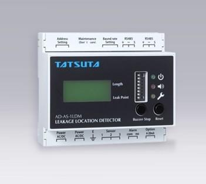
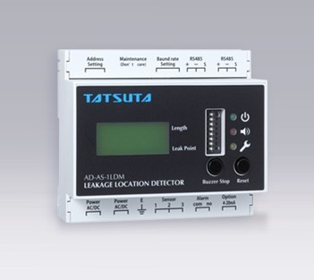
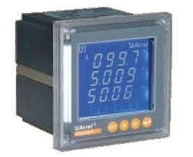
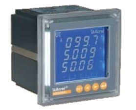
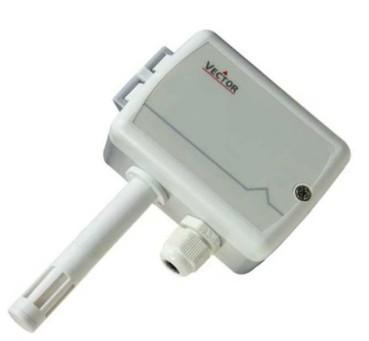
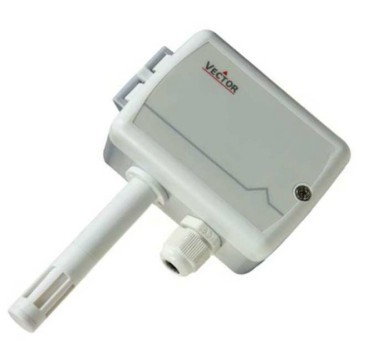
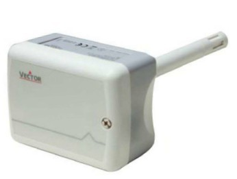

-

漏水位置检测器
■可连接到网络进行统一管理（RS-485）！ ■传感器最长连接长度：1500m 业界最长！ ■传感器可分支连接！使施工更具效率化！ ■取得ＣＥ认证！
漏水位置检测器
- 电气柜内置型单回路漏水位置检测器。
- 可连接1个漏水传感器。
- 数字显示漏水位置（m）
- 采用DC24V电源 AC24V or DC24V兼用。
- 灵敏度可调整。
- 同时具备断线检测功能。
- 带外部输出接点。
- 带有漏水位置数据的模拟输出。（RS-485）
规格
传感器回路数 1 电源电压 AC24V±10％（50Hz／60Hz通用）
DC24V±10％兼用传感器电压 AC12.5V以下 漏水警报 红色LED闪亮 蜂鸣器鸣叫 漏水位置数字显示 断线警报 红色LED亮灯 蜂鸣器鸣叫 7位LED显示"---" 控制输出接点额定负荷（电阻负荷） AC220V 0.1A DC24V 1.0A 消耗功率 最大5W 检测电平调整 有 检查功能 无 外观尺寸W×H×D（mm） 106×96×57 重量（kg） 约0.25 颜色 灰 ※需在漏水传感器的末端连接断线检测终端(ZT-L2)。
-

网络电力仪表
采用现代微处理器技术和交流采样技术设计而成。 网络电力仪表采用异步半双工RS485的通讯接口和MODBUS-RTU通讯协议， 以满足您的自动化通信系统，使用低成本的屏蔽双绞线配线即可构造一可靠的通讯网络。
网络电力仪表
公司集多年电力测量产品设计之经验，采用现代微处理器技术和交流采样技术设计而成了该系列网络电力仪表。产品的设计充分考虑了成本效能化、智能性和可靠性，有以下特点：
• 可直接从电流、电压互感器接入信号；
• 可任意设定PT/CT变比；仪表显示可滚动设置；
• I/O开关量，继电器报警输出，4~20mA模拟量等功能模块化设计；
• 多块仪表可设置不同地址；
• 可通讯接入SCADA、PLC系统中；可与业界多种软件通讯（Intouch, Fix, Citec，组态网等）；
• LED或蓝屏背光LCD显示，可视度高；
• 方便安装，接线简单，工程量小；
• 仪表采用专用失电保护电路，在失电情况下，数据保存不丢失，恢复电源后，仪表继续运行；
• 四象限电能计量，分时计费，最大需量纪录及12个月电能统计。
-

室外湿度变送器& 温度传感
空调冷热系统风道的室外温湿度测量. 此系列湿度变送器采用电容聚合物敏感元件. 变送器电路的微处理器每秒对湿度采样一次.
室外湿度变送器& 温度传感
特点
• 室外温湿度测量
• 温湿度最值记忆功能
• 0…10V, 0…20mA or 2…10V, 4…20mA 通过跳线改变
• 输出信号范围可以通过软件修改
• 平均信号输出可以选择
• 可选择外壳 LCD 显示 (OPC-S) 或外接显示 (OPA-S)
• 用户可定制 LED 显示屏
应用
• 空调冷热系统风道的室外温湿度测量.
• 可记录测量温湿度的最高和最低值.
• 可选择配置显示
概述
此系列湿度变送器采用电容聚合物敏感元件. 变送器电路的微处理器每秒对湿度采样一次.他采集出数秒的信号后去除最高和最低的值平均输出信号来保证外部干扰对变送器最小的影响. 湿度标准范围是 0…100% rH，标准信号范围 0-10VDC, 2-10VDC, 4-20mA 和 0-20mA.输出信号范围和滤波参数的时间可以通过软件调整. 标准的信号范围和类型可以通过跳线来进行选择,如非标准的信号范围和输出值必 须通过软件参数和设定(OPA-S or OPC-S).
-

风道湿度变送器& 温度传感
空调冷热系统风道的送回风温湿度测量,通风系统的温湿度测量,此系列湿度变送器采用电容聚合物敏感元件. 变送器电路的微处理器每秒对湿度采样一次.
风道湿度变送器& 温度传感
特点
• 风道温湿度测量
• 温湿度最值记忆功能
• 0…10V, 0…20mA or 2…10V, 4…20mA 通过跳线改变
• 输出信号范围可以通过软件修改
• 平均信号输出可以选择
• 可选择外壳 LCD 显示 (OPC-S) 或外接显示 (OPA-S)
• 用户可定制 LED 显示屏
应用
• 空调冷热系统风道的送回风温湿度测量,通风系统的温湿度测量.
• 可记录测量温湿度的最高和最低值.
• 可选择配置显示
概述
此系列湿度变送器采用电容聚合物敏感元件. 变送器电路的微处理器每秒对湿度采样一次.他采集出数秒的信号后去除最高和最低的值平均输出信号来保证外部干扰对变送器最小的影响. 湿度标准范围是 0…100% rH，标准信号范围 0-10VDC, 2-10VDC, 4-20mA 和 0-20mA.输出信号范围和滤波参数的时间可以通过软件调整. 标准的信号范围和类型可以通过跳线来进行选择,如非标准的信号范围和输出值必 须通过软件参数和设定(OPA-S or OPC-S).